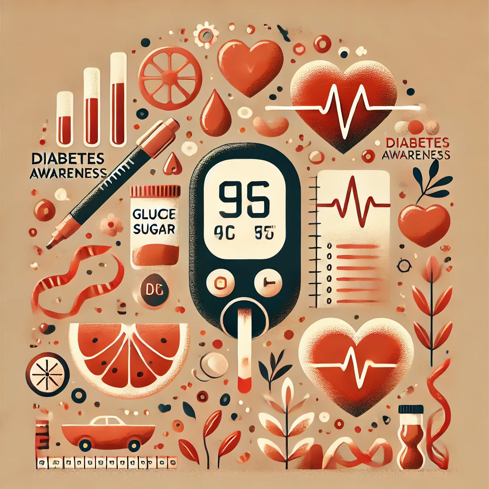
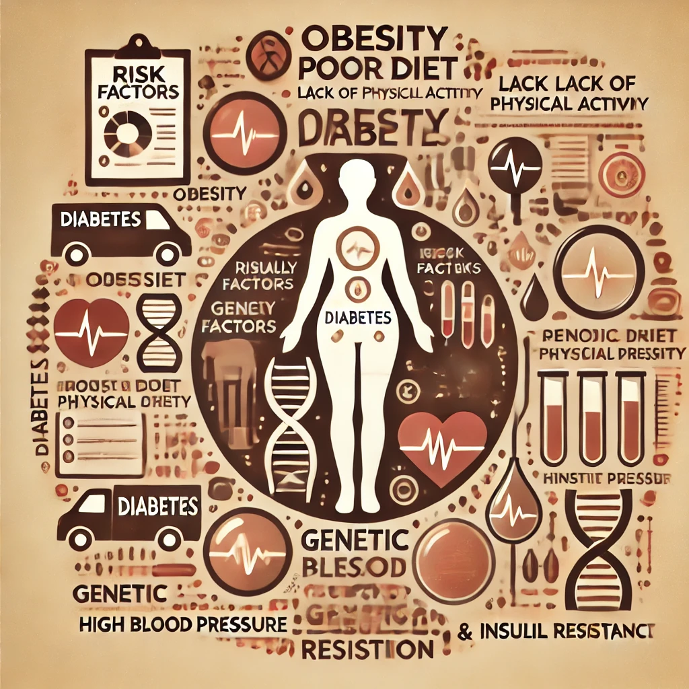

Why diabetes matters and how we can address it
Diabetes is a chronic metabolic disorder affecting millions worldwide. It occurs when the body cannot regulate blood sugar properly due to insulin issues. According to the World Health Organization (WHO), over 537 million adults have diabetes, a number expected to rise to 643 million by 2030. Left untreated, diabetes can lead to severe complications such as heart disease, kidney failure, nerve damage, and vision loss.
Diabetes is a global health crisis, impacting individuals of all ages. Early detection and management can prevent serious complications. Studies show that over 50% of Type 2 diabetes cases are preventable through lifestyle modifications. Governments and healthcare organizations are investing in awareness campaigns, research, and better medical interventions to mitigate its effects.
Diabetes does not discriminate; it affects people across all demographics. However, genetics, lifestyle, and environment play a significant role in determining an individual's risk. Certain ethnic groups, people with sedentary lifestyles, and those with a family history of diabetes are at higher risk. Additionally, an increasing number of children and young adults are being diagnosed due to rising obesity rates.
Medical research has led to advancements in diabetes management, including insulin therapy, continuous glucose monitoring (CGM), and AI-based predictive analysis. Pharmaceutical companies are developing newer medications, and wearable technology is improving self-monitoring. However, there is still a long way to go in making these treatments accessible to everyone globally.
Understanding diabetes has evolved over centuries, from early descriptions in ancient Egyptian texts to modern-day advancements in insulin therapy and continuous glucose monitoring (CGM). The discovery of insulin in 1921 by Banting and Best marked a revolutionary step in diabetes management, transforming it from a fatal disease to a manageable chronic condition. Today, AI-driven diagnostics and precision medicine are shaping the future of diabetes care, offering tailored treatments based on genetic and lifestyle factors.
Diabetes is not just a health issue but also a major economic burden. According to the International Diabetes Federation (IDF), global healthcare expenditures for diabetes reached $966 billion in 2021, a 316% increase over the last 15 years. Beyond financial costs, diabetes affects the quality of life, productivity, and mental health of individuals, reinforcing the need for early prevention strategies, better healthcare policies, and increased public awareness.
While progress has been made, there are several areas that need further development. Some of the key steps forward include: